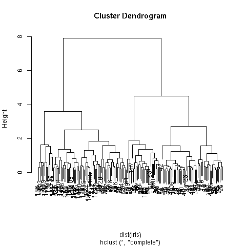

L'objectif de ce TD est de manipuler l'algorithme de segmentation hiérarchique ascendante disponible dans R.
L'algorithme de segmentation hiérarchique ascendante est disponible au travers de la fonction hclust() de R. Elle s'applique non pas à un jeu de données, mais à une matrice de distance. On peut facilement obtenir cette matrice pour un data frame à l'aide de la fonction dist() qui calcule la distance euclidienne entre chaque paire de données du data frame :
hclust (dist (iris [,1:4]))
exécute l'algorithme de segmentation hiérarchique sur le jeu de
données iris en utilisant les quatre attributs longueur et largeur des
spéales et des pétales.
À l'issue de son exécution, hclust() a construit un dendrogramme.
On peut visualiser le dendrogramme à l'aide de la fonction plot(). Ainsi, supposons que vous ayez placé le résultat de hclust() dans iris.hclust.
plot (iris.hclust)
produit :

où chaque feuille du dendrogramme est étiquetée par le numéro d'une
donnée.
Plusieurs méthodes sont possibles pour découper le dendrogramme et obtenir une segmentation en K groupes, K étant fixé.
D'une segmentation hiérarchique, on peut obtenir autant de groupes (de
1 à N) que l'on veut en découpant l'arbre au nouveau adéquat. Cela se
fait avec la fonction cutree comme cela : pour obtenir
3 groupes à partir de la segmentation hiérarchique précédente, on tape
la commande cutree (iris.hclust, 3).
Cette commande fournit un vecteur de N entiers : l'élément i
indique le groupe de la donnée i ; les groupes sont numérotés de
1 à K.
La fonction rect.hclust() fait la même chose que cutree(), mais le fait visuellement. Ainsi :
rect.hclust (iris.hclust, 5)
met en évidence les 5 groupes (faites-le !) du dendrogramme
(remarque : il faut avoir fait un plot (iris.hclust)
auparavant).
On peut aussi spécifier la couleur des bordures :
rect.hclust (iris.hclust, 5,
border = c ("blue", "green", "red", "pink", "black"))
et on peut aussi n'entourer que certains des groupes, par exemple le deuxième et le cinquième :
rect.hclust (iris.hclust, 5, which = c (2, 5))
De plus, si l'on affecte le résultat à un objet en tapant :
iris.hclust.5.2 <- rect.hclust (iris.hclust, 5, which = c (2, 5))
iris.hclust.5.2 est une liste contenant 2 éléments (autant que de groupes) et chaque élément de la liste contient la liste des numéros des données de ce groupe.
Comment faites-vous pour connaître le centre de gravité de chacun des 5 groupes (de la manière la plus simple qui soit) ?
On peut aussi afficher le dendrogramme et indiquer à la souris où (les segments verticaux) on veut couper. On utilsie pour cela la fonction identify. Tapez :
plot (iris.hclust) identify (iris.hclust)
Vous pouvez alors cliquer avec le bouton gauche de la souris sur les
segments verticaux au niveau desquels vous voulez découper le
dendrogramme. Faites 4 découpes (par exemple). Quand vous avez
terminé, cliquez avec le bouton droit (tout cela dans la fenêtre
graphique).
À nouveau, vous pouvez récupérer la composition de chacun des groupes
en affectant le résultat de la fonction identify à un
objet :
plot (iris.hclust) iris.hclust.id <- identify (iris.hclust)
Comme avec rect.hclust(), iris.hclust.id est une liste dans laquelle chaque élément correspond à un groupe et contient la liste des numéros des données de ce groupe.